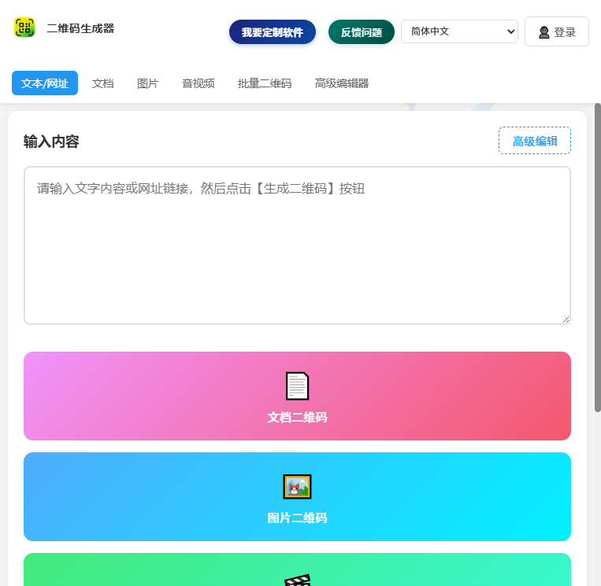
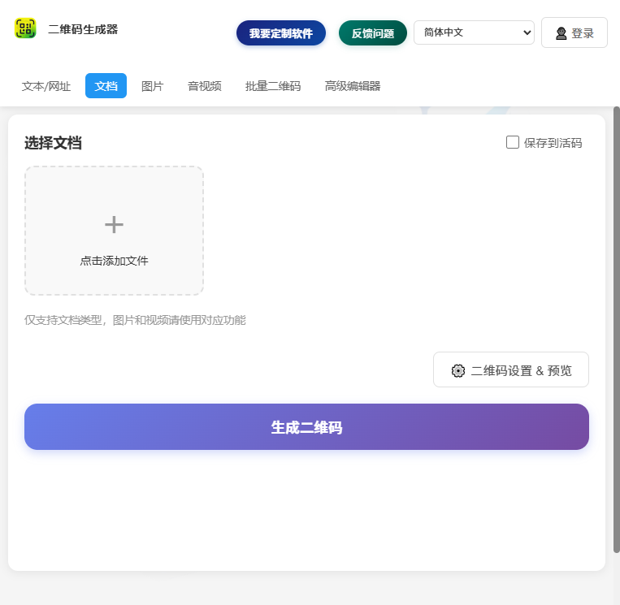
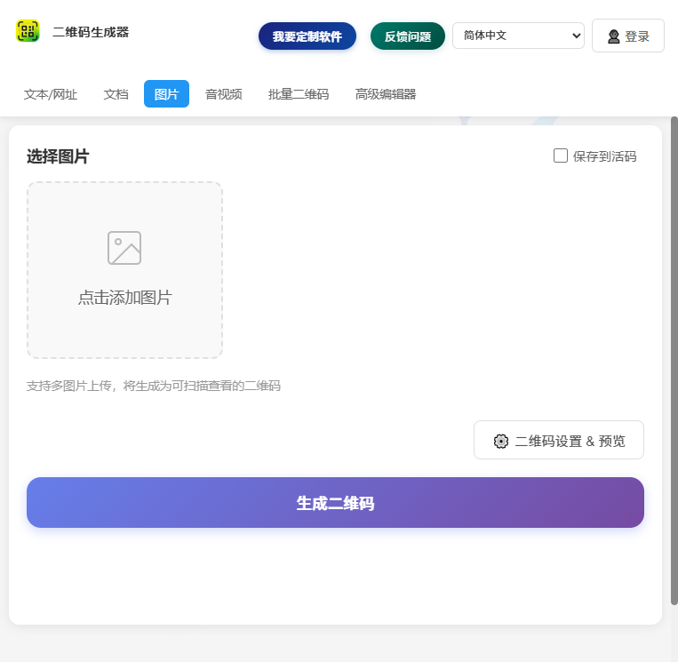
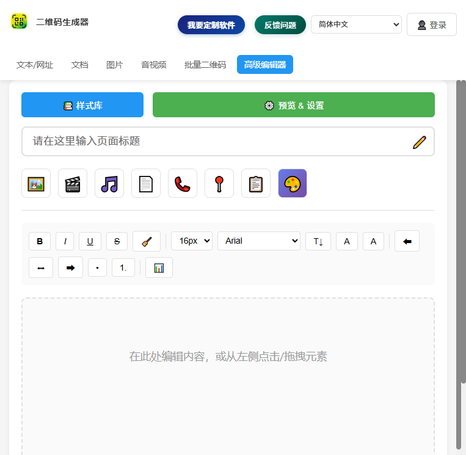
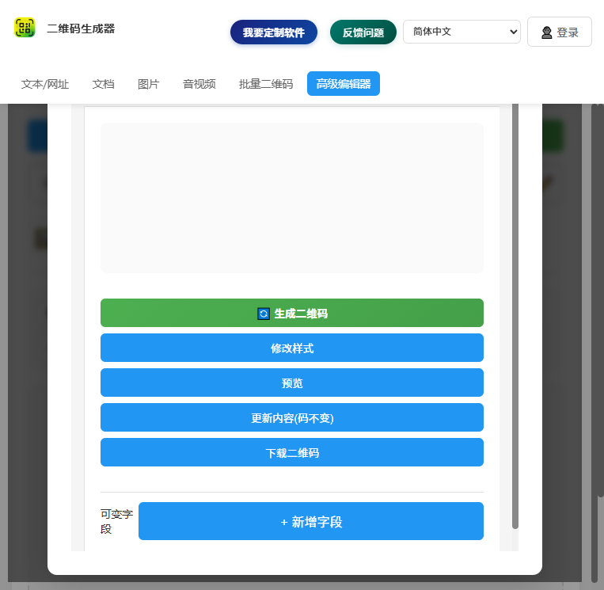

四、操作说明
（1）【二维码生成】文本/网址二维码
输入一段文本或网址，生成可扫描的二维码，适合分享链接、文案、联系方式等。
- 点击顶部“文本”页签，输入文本或网址。
- 点击“生成”。
- 在预览/设置中调整尺寸、颜色、容错等级等，并下载或复制二维码。

第 4 页
1. Introduction3
(1) Purpose3
(2) Environment3
2. Feature Sections4
(1) 二维码生成4
(2) 设置与预览9
本说明用于指导你使用“二维码生成器”完成二维码生成、预览与管理等操作，适用于日常办公与内容分发场景。
支持 Web 与桌面端（Electron）。建议在 Windows 10/11 上使用 Chromium 内核浏览器/桌面端运行；为保证截图与展示一致，建议窗口分辨率不低于 1366×768。
主界面概览（默认文本/网址页）

输入一段文本或网址，生成可扫描的二维码，适合分享链接、文案、联系方式等。
选择 Word/Excel/PPT/PDF 等文档生成二维码。单个文档生成查看二维码；多个文档会生成“文件夹二维码”。

选择图片生成二维码。单张图片生成查看二维码；多张图片会生成“图片文件夹二维码”。

支持为音视频链接生成二维码；也可选择本地音视频文件生成二维码（文件较大时建议使用在线链接模式）。
进入高级编辑模式，进行更灵活的内容编辑与二维码生成。

生成后打开设置与预览弹窗，调整二维码尺寸、颜色、背景色与纠错等级，并进行导出。
